Walk aboard via the gangway →Luz de Mar · Exterior refit
The supplied exterior photographs and video now guide the visible cockpit, two distinct port-side stairs, upper terrace, barbecue, fabric shade and boarding connection. The proposed fixed pier joins Rocha’s own shoreline.
Local component dimensions and hidden construction remain estimates. Covered objects reproduce the visible covers; the new video does not establish enclosed cabin interiors. Model basis.
Dock and boarding connection
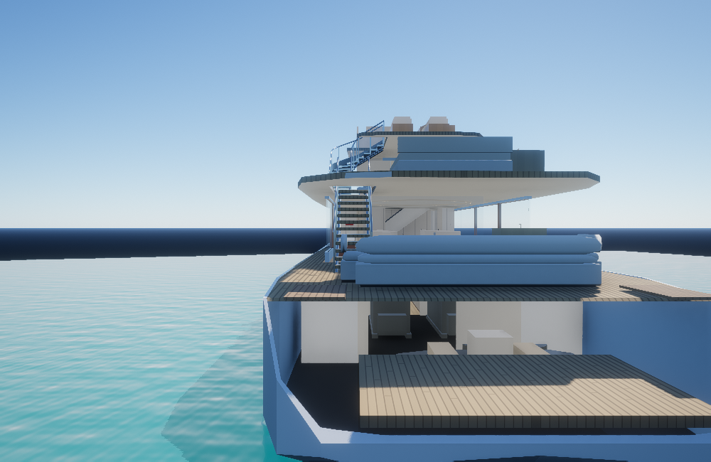
Before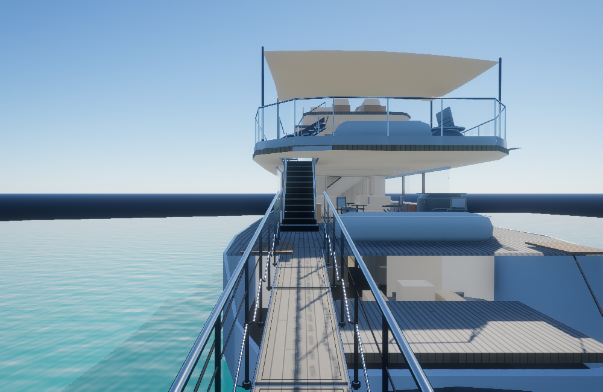
AfterClosed black lower exterior stair
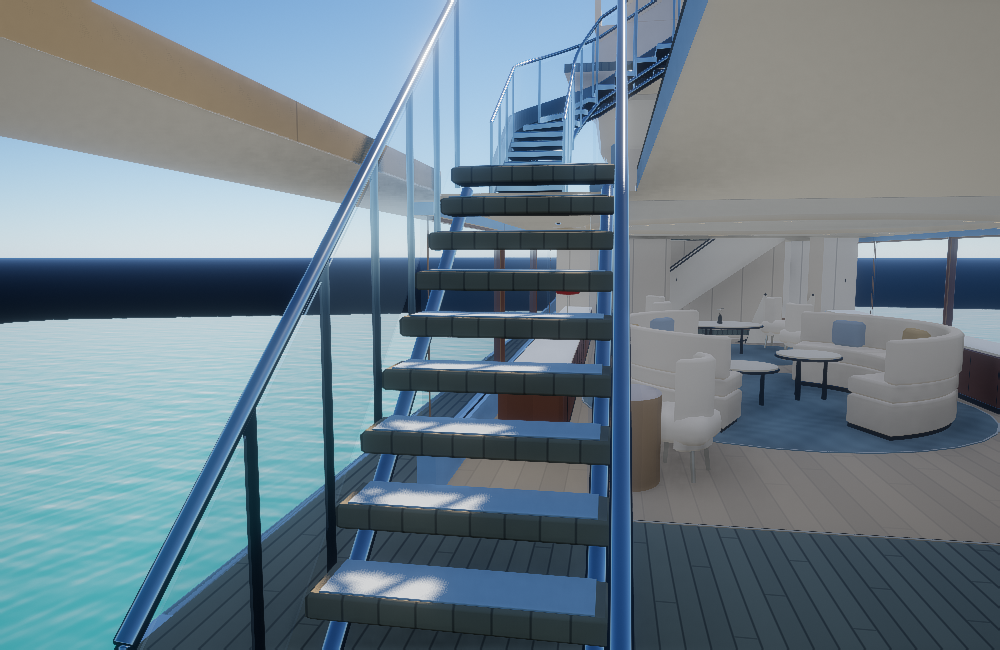
Before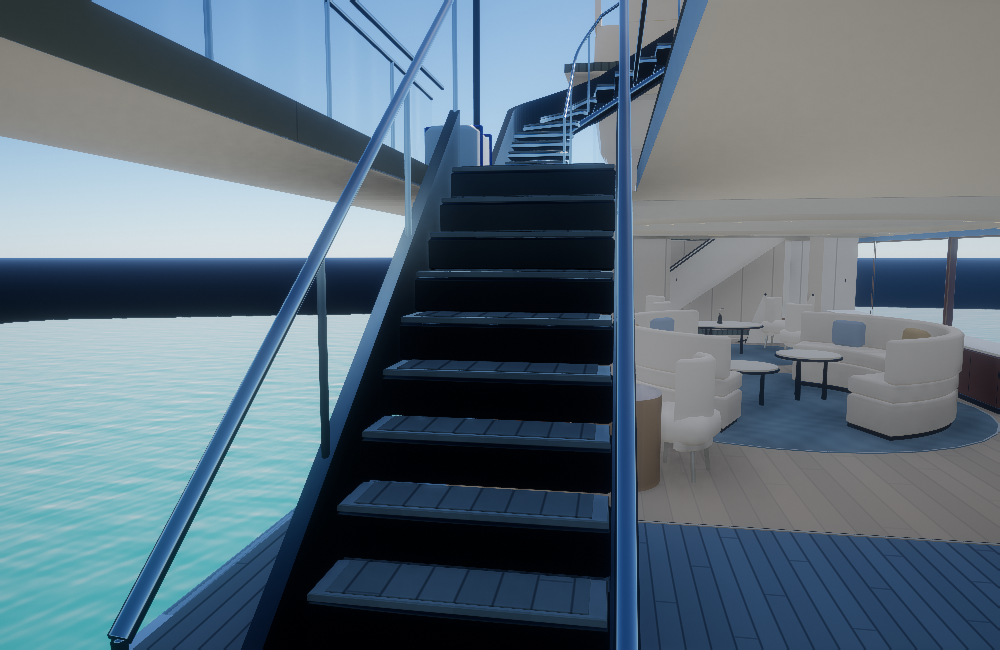
AfterOpen upper exterior stair
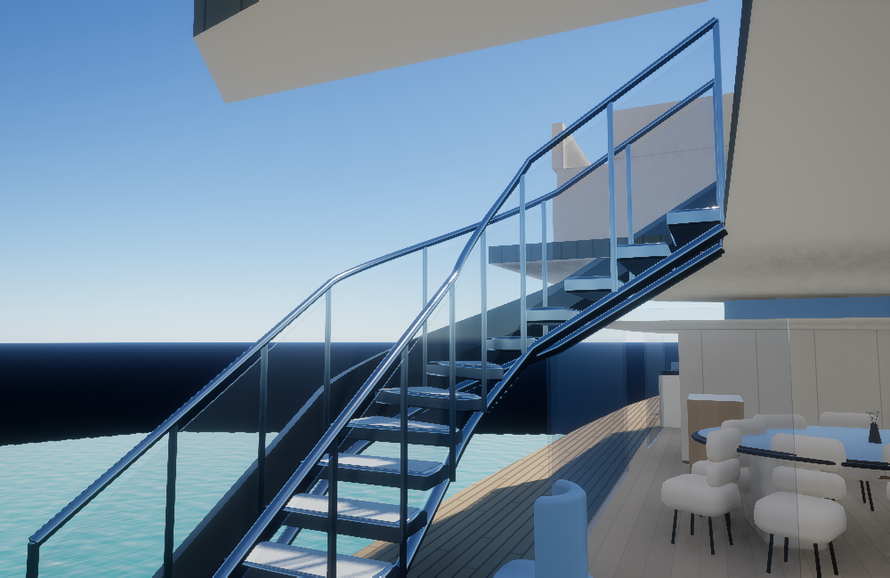
Before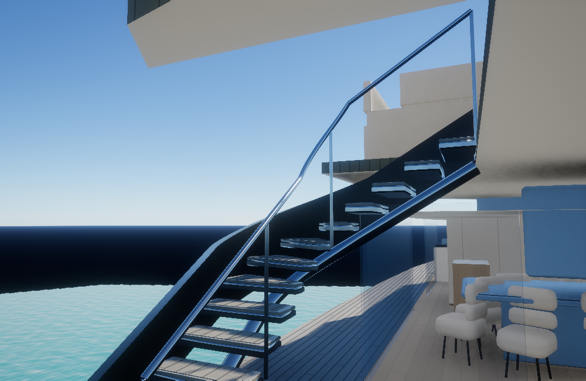
AfterCockpit chairs and covered furniture
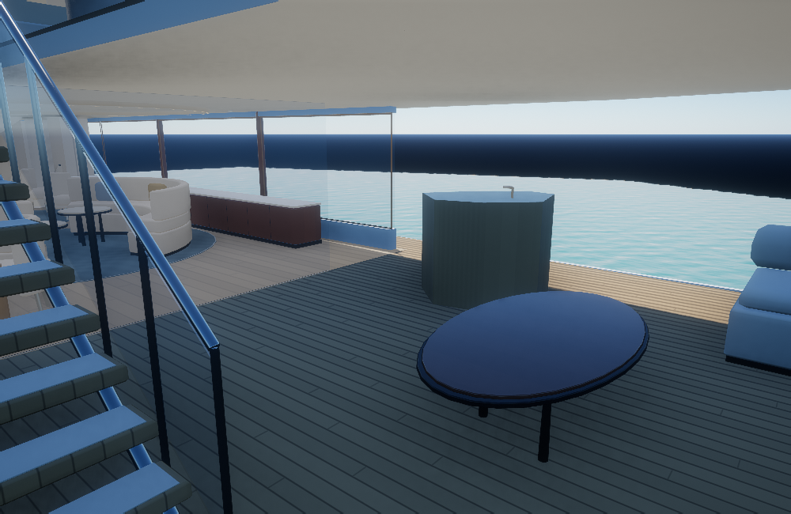
Before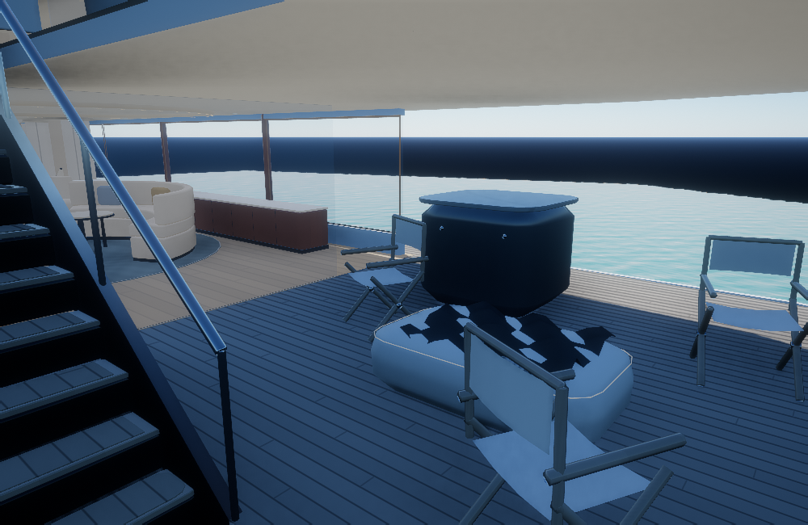
AfterBarbecue cabinet and raised hood
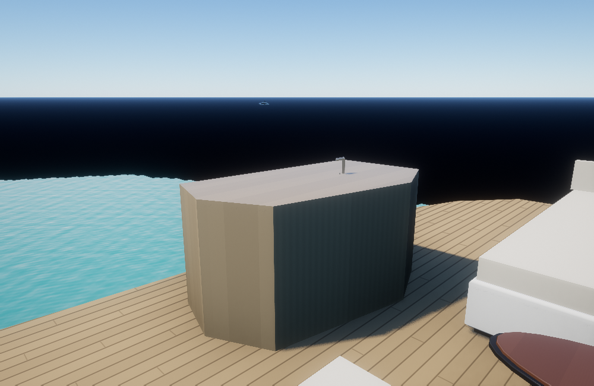
Before After
AfterCovered island, table and fabric shade
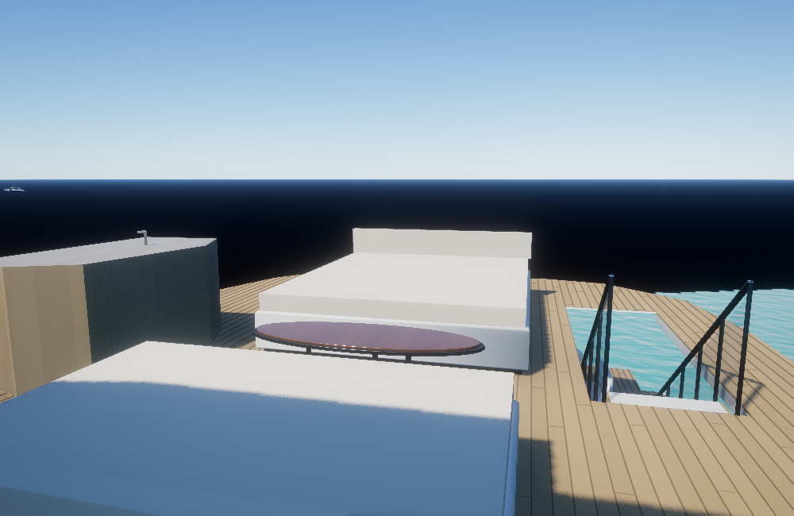
Before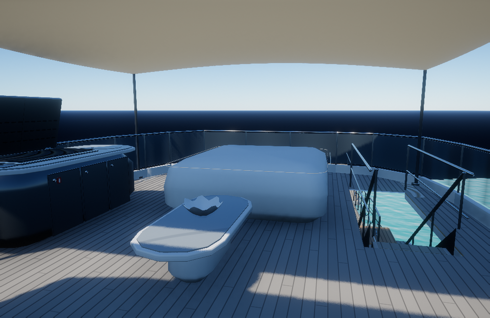
AfterUpper dining area
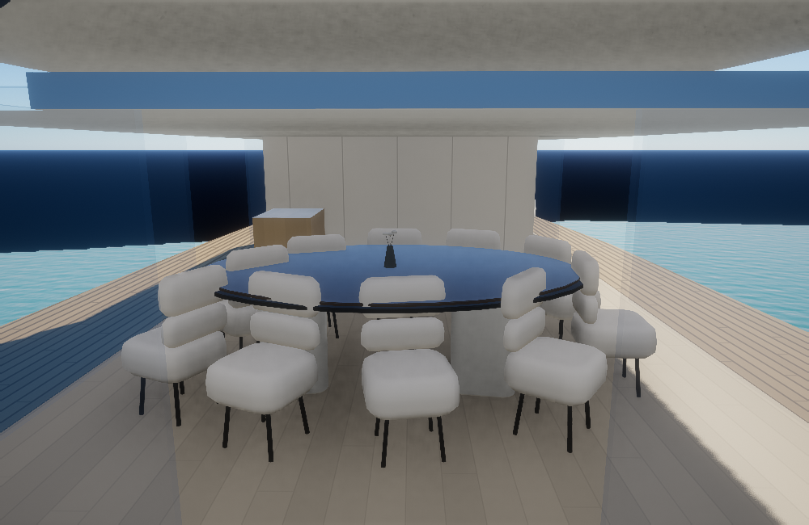
Before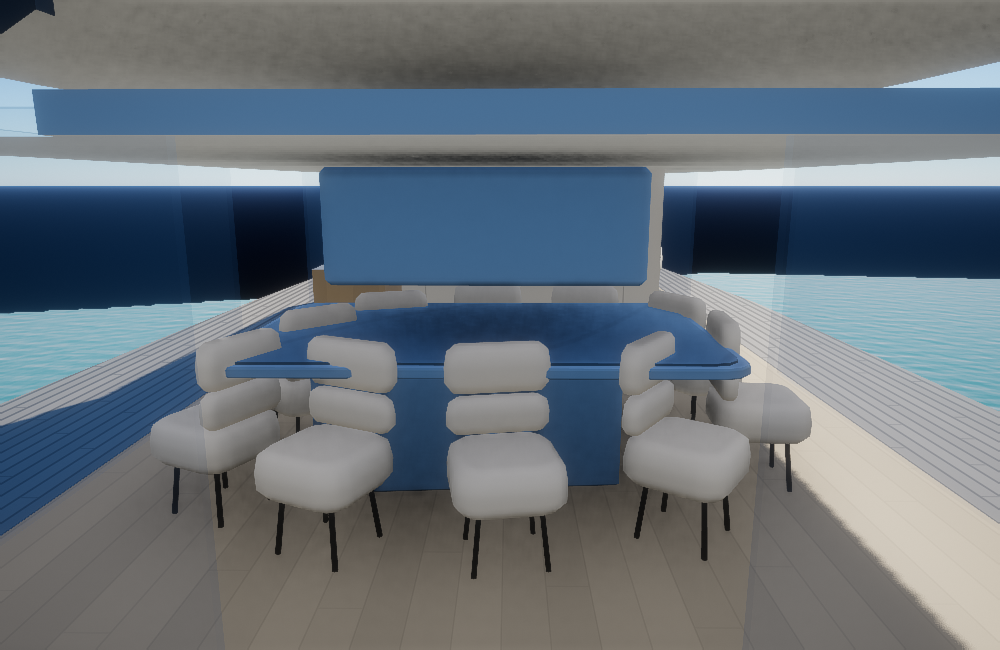
AfterPortrait view
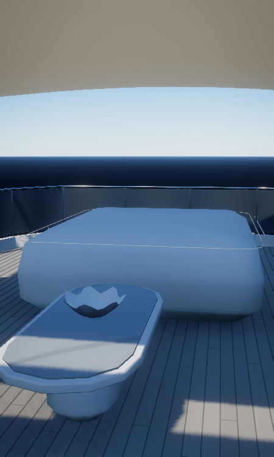
These are actual isolated native Vulkan renders of the yacht and lake, with yacht materials, sunlight and the existing GTAO/TAA/ACES chain. They are not full Rocha browser screenshots or physical-phone FPS tests. Original private photos and video are not included.